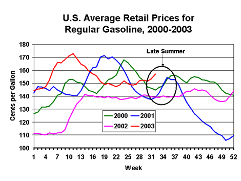

|
Released on August 13, 2003
(Next Release on August 20, 2003)
Late Summer Surge
With average retail prices for regular grade gasoline up 5.5 cents per gallon
nationally over the last two weeks (on top of a smaller rise that has taken
place since the July 4 halfway point of the summer season), it’s possible
that we may be in the midst of another late-summer surge. In 2000, the national
average price for regular gasoline rose by 11.4 cents per gallon during the
four-week period from August 14 to September 11, and in 2001, prices rose by
16.9 cents per gallon between August 6 and September 3. Even if spot gasoline
prices don’t rise substantially from where they were last week (and already
we’ve seen a huge spike in gasoline prices around the Los Angeles area
due to refinery and pipeline problems earlier this week), further increases
in retail prices may occur, with increases in August possibly approaching those
seen in the late summers of 2000 and 2001.
What’s interesting is how similar the pattern of gasoline
prices this year has been to 2000 and 2001 (or looked at differently, how unusual
last year was). All three years (2000, 2001, and 2003) saw large price increases
in the spring or early summer followed by a substantial price decline throughout
the heart of the summer season, only to see prices rise again in late summer
(see chart below). In all three years, the high prices earlier in the season
encouraged increased refinery production of gasoline, which helped push gasoline
prices back to levels seen before the early season price surge. However, in
both 2000 and 2001, refinery production of gasoline dropped by late summer as
refiners began to shift their yields towards making more distillate fuel. Additionally,
in 2001, crude inputs into refineries dropped in late summer, thus making the
reduction in gasoline production more dramatic. But this year, gasoline refinery
production has remained relatively strong, with historically strong gasoline
demand putting pressure on prices. With the price of West Texas Intermediate
crude oil above $30 per barrel recently, higher gasoline prices would likely
be necessary to encourage refiners to process more crude oil. Therefore, any
further increase in retail gasoline prices could encourage even more gasoline
production and ultimately lead to lower gasoline prices down the road. But this
may not occur until after the end of the summer season.

U.S. Retail Gasoline Prices Rise Again
The U.S. average retail price for regular gasoline rose last week for the fifth
time in six weeks, increasing by 3.5 cents per gallon as of August 11 to reach
157.1 cents per gallon, which is 17.8 cents per gallon higher than a year ago.
Prices rose pretty uniformly throughout the nation, with the largest increase
of 4.5 cents occurring in the Lower Atlantic and the smallest increases of 2.7
cents occurring in the Midwest and New England. The West Coast posted the highest
regional average retail price for gasoline, with prices rising 4.2 cents to
hit 171.4 cents per gallon. The region with the lowest average price is the
Gulf Coast, where prices for regular gasoline averaged 148.6 cents per gallon.
Retail diesel fuel prices increased last week by 3.9 cents per
gallon as of August 11 to a national average of 149.2 cents per gallon, which
is 18.9 cents per gallon higher than a year ago. Retail diesel prices were up
throughout the nation last week, with the Midwest and Gulf Coast seeing price
increases of 4.4 cents and 4.7 cents, respectively. Lower Atlantic retail diesel
prices averaged the lowest in the country at 143.4 cents per gallon as of August
11, while California saw the highest prices at 171.5 cents per gallon.
Weekly Propane Stockbuild Continues Strong
U.S. stockholders of propane continued to build storage at a robust pace last
week with a 2.3-million-barrel addition that put U.S. inventories of propane
as of August 8, 2003 at an estimated 58.5 million barrels. Last week's strong
stockbuild continued to push U.S. inventories closer to the middle of the average
range for this time of year. Regional stockbuilds were mostly concentrated in
the Gulf Coast region last week with a reported 1.4-million-barrel gain, followed
by the Midwest region that saw inventories rise by 0.8 million barrels during
this same period. Inventories in the East Coast region last week posted a small
inventory drop that totaled less than 0.1 million barrels. While East Coast
inventories moved to the lower limit of the average range last week, Gulf Coast
inventories moved above the upper limit of the average range for this period.
During this same time, Midwest inventories continued to track below the average
range. Propylene nonfuel use inventories fell by nearly 0.2 million barrels
to end the week at about 3.7 million barrels, a level accounting for 6.3 percent
of total propane/propylene inventories.
Note: Text from the previous editions of "This Week In Petroleum" is now accessible
through a link at the top right-hand corner of this page.
|